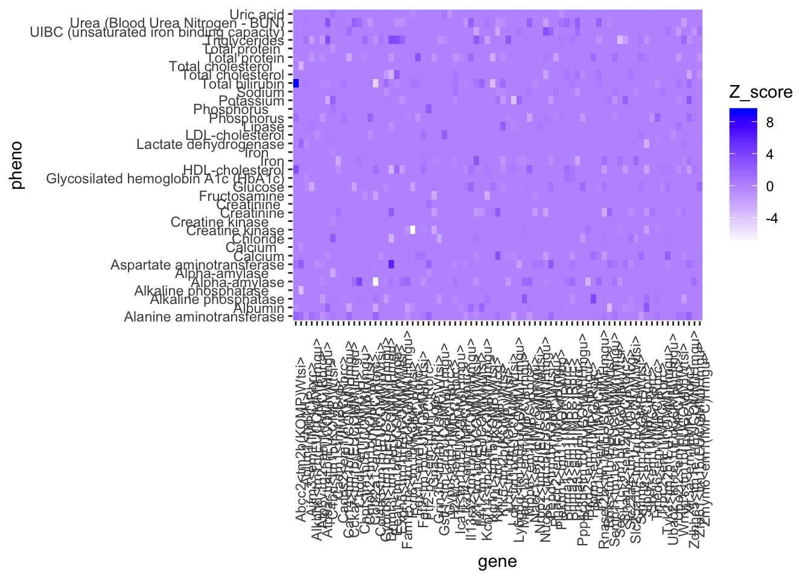

Last updated: 2020-03-25
Checks: 7 0
Knit directory: Bin_Project/
This reproducible R Markdown analysis was created with workflowr (version 1.4.0). The Checks tab describes the reproducibility checks that were applied when the results were created. The Past versions tab lists the development history.
Great! Since the R Markdown file has been committed to the Git repository, you know the exact version of the code that produced these results.
Great job! The global environment was empty. Objects defined in the global environment can affect the analysis in your R Markdown file in unknown ways. For reproduciblity it’s best to always run the code in an empty environment.
The command set.seed(20200325) was run prior to running the code in the R Markdown file. Setting a seed ensures that any results that rely on randomness, e.g. subsampling or permutations, are reproducible.
Great job! Recording the operating system, R version, and package versions is critical for reproducibility.
Nice! There were no cached chunks for this analysis, so you can be confident that you successfully produced the results during this run.
Great job! Using relative paths to the files within your workflowr project makes it easier to run your code on other machines.
Great! You are using Git for version control. Tracking code development and connecting the code version to the results is critical for reproducibility. The version displayed above was the version of the Git repository at the time these results were generated.
Note that you need to be careful to ensure that all relevant files for the analysis have been committed to Git prior to generating the results (you can use wflow_publish or wflow_git_commit). workflowr only checks the R Markdown file, but you know if there are other scripts or data files that it depends on. Below is the status of the Git repository when the results were generated:
Ignored files:
Ignored: .Rproj.user/
Untracked files:
Untracked: docs/figure/
Note that any generated files, e.g. HTML, png, CSS, etc., are not included in this status report because it is ok for generated content to have uncommitted changes.
library(data.table)
library(dplyr)
Attaching package: 'dplyr'The following objects are masked from 'package:data.table':
between, first, lastThe following objects are masked from 'package:stats':
filter, lagThe following objects are masked from 'package:base':
intersect, setdiff, setequal, unionlibrary(reshape2)
Attaching package: 'reshape2'The following objects are masked from 'package:data.table':
dcast, meltlibrary(tidyr)
Attaching package: 'tidyr'The following object is masked from 'package:reshape2':
smithslibrary(ggplot2)KOMPv10.1.file = "~/Box Sync/Miami_IMPC/data/v10.1/IMPC_ALL_statistical_results.csv.gz"
KOMPv10.1 = fread(KOMPv10.1.file, header=TRUE, sep=",")Registered S3 method overwritten by 'R.oo':
method from
throw.default R.methodsS3clinical_chem = KOMPv10.1 %>%
select(procedure_name, parameter_name, zygosity, allele_symbol,
genotype_effect_parameter_estimate, genotype_effect_stderr_estimate,
genotype_effect_p_value) %>%
filter(procedure_name == "Clinical Chemistry", zygosity == "homozygote") %>%
mutate(z_score = genotype_effect_parameter_estimate/genotype_effect_stderr_estimate,
gene_pheno = paste0(parameter_name, "_", allele_symbol))
head(clinical_chem) procedure_name parameter_name zygosity
1 Clinical Chemistry Albumin homozygote
2 Clinical Chemistry Total protein homozygote
3 Clinical Chemistry Alanine aminotransferase homozygote
4 Clinical Chemistry Total bilirubin homozygote
5 Clinical Chemistry Calcium homozygote
6 Clinical Chemistry HDL-cholesterol homozygote
allele_symbol genotype_effect_parameter_estimate
1 Abcc2<tm2b(KOMP)Wtsi> -0.146562338
2 Abcc2<tm2b(KOMP)Wtsi> -0.138876955
3 Abcc2<tm2b(KOMP)Wtsi> 7.778542407
4 Abcc2<tm2b(KOMP)Wtsi> 0.243142364
5 Abcc2<tm2b(KOMP)Wtsi> -0.006329937
6 Abcc2<tm2b(KOMP)Wtsi> 10.937832126
genotype_effect_stderr_estimate genotype_effect_p_value z_score
1 0.30837835 6.346251e-01 -0.47526793
2 0.44995517 7.576087e-01 -0.30864620
3 4.15086599 6.101778e-02 1.87395652
4 0.02627860 3.674891e-20 9.25248391
5 0.09761637 9.483010e-01 -0.06484504
6 3.39188752 1.272411e-03 3.22470367
gene_pheno
1 Albumin_Abcc2<tm2b(KOMP)Wtsi>
2 Total protein_Abcc2<tm2b(KOMP)Wtsi>
3 Alanine aminotransferase_Abcc2<tm2b(KOMP)Wtsi>
4 Total bilirubin_Abcc2<tm2b(KOMP)Wtsi>
5 Calcium_Abcc2<tm2b(KOMP)Wtsi>
6 HDL-cholesterol_Abcc2<tm2b(KOMP)Wtsi>#select necessary for z-score matrix
matrix = clinical_chem %>%
select(allele_symbol, parameter_name, z_score)
head(matrix) allele_symbol parameter_name z_score
1 Abcc2<tm2b(KOMP)Wtsi> Albumin -0.47526793
2 Abcc2<tm2b(KOMP)Wtsi> Total protein -0.30864620
3 Abcc2<tm2b(KOMP)Wtsi> Alanine aminotransferase 1.87395652
4 Abcc2<tm2b(KOMP)Wtsi> Total bilirubin 9.25248391
5 Abcc2<tm2b(KOMP)Wtsi> Calcium -0.06484504
6 Abcc2<tm2b(KOMP)Wtsi> HDL-cholesterol 3.22470367new_matrix = acast(matrix, allele_symbol ~ parameter_name, value.var = "z_score",
fun.aggregate = sum)
data_matrix = as.data.frame(new_matrix)
data_matrix[is.na(data_matrix)] = 0
long_matrix = data_matrix %>%
gather(key = "parameter_name", value = "z_score", 1:48)
head(long_matrix) parameter_name z_score
1 Alanine aminotransferase 0.5056457
2 Alanine aminotransferase 0.0000000
3 Alanine aminotransferase -0.4883739
4 Alanine aminotransferase 1.5973520
5 Alanine aminotransferase 0.1523003
6 Alanine aminotransferase -0.9723771data = expand.grid(gene = rownames(data_matrix), pheno=colnames(data_matrix))
data$Z_score=long_matrix$z_score
#ggplot(data = data, aes(x= gene, y = pheno, fill =Z_score)) +
#geom_tile() +
#scale_fill_gradient(low="white",high="blue") +
#theme(axis.text.x = element_text(angle = 90))
#-------------------------------------------------------------------------------------------------
# long to wide (Small)
new_matrix_small = acast(matrix[1:500, ], allele_symbol ~ parameter_name, value.var = "z_score")
data_matrix_small = as.data.frame(new_matrix_small)
data_matrix_small[is.na(data_matrix_small)] = 0
long_matrix_small = data_matrix_small %>%
gather(key = "parameter_name", value = "z_score", 1:36)
data_small = expand.grid(gene = rownames(data_matrix_small), pheno=colnames(data_matrix_small))
data_small$Z_score=long_matrix_small$z_score
ggplot(data = data_small, aes(x= gene, y = pheno, fill =Z_score)) +
geom_tile() +
scale_fill_gradient(low="white",high="blue") +
theme(axis.text.x = element_text(angle = 90))
sessionInfo()R version 3.6.1 (2019-07-05)
Platform: x86_64-apple-darwin15.6.0 (64-bit)
Running under: macOS Mojave 10.14.6
Matrix products: default
BLAS: /Library/Frameworks/R.framework/Versions/3.6/Resources/lib/libRblas.0.dylib
LAPACK: /Library/Frameworks/R.framework/Versions/3.6/Resources/lib/libRlapack.dylib
locale:
[1] en_US.UTF-8/en_US.UTF-8/en_US.UTF-8/C/en_US.UTF-8/en_US.UTF-8
attached base packages:
[1] stats graphics grDevices utils datasets methods base
other attached packages:
[1] ggplot2_3.2.1 tidyr_1.0.0 reshape2_1.4.3 dplyr_0.8.3
[5] data.table_1.12.2
loaded via a namespace (and not attached):
[1] Rcpp_1.0.2 pillar_1.4.2 compiler_3.6.1
[4] git2r_0.26.1 plyr_1.8.4 workflowr_1.4.0
[7] R.methodsS3_1.7.1 R.utils_2.9.0 tools_3.6.1
[10] bit_1.1-14 zeallot_0.1.0 digest_0.6.20
[13] evaluate_0.14 tibble_2.1.3 lifecycle_0.1.0
[16] gtable_0.3.0 pkgconfig_2.0.2 rlang_0.4.5
[19] yaml_2.2.0 xfun_0.9 withr_2.1.2
[22] stringr_1.4.0 knitr_1.24 fs_1.3.1
[25] vctrs_0.2.0 bit64_0.9-7 rprojroot_1.3-2
[28] grid_3.6.1 tidyselect_0.2.5 glue_1.3.1
[31] R6_2.4.0 rmarkdown_1.15 purrr_0.3.3
[34] magrittr_1.5 whisker_0.3-2 ellipsis_0.3.0
[37] backports_1.1.4 scales_1.0.0 htmltools_0.3.6
[40] assertthat_0.2.1 colorspace_1.4-1 labeling_0.3
[43] stringi_1.4.3 lazyeval_0.2.2 munsell_0.5.0
[46] crayon_1.3.4 R.oo_1.22.0